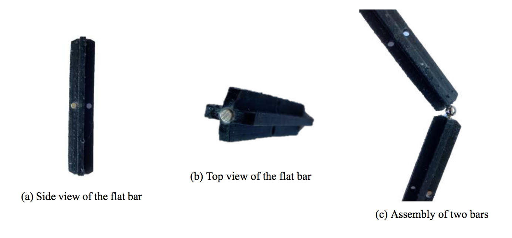
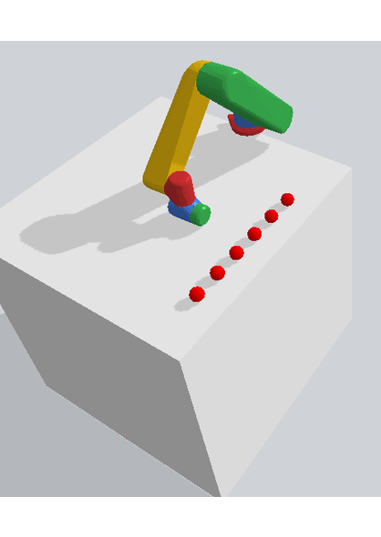

Abstract
Since the start of the space conquest, almost all spacecraft have been manufactured and assembled on the ground, then integrated into a launch vehicle for delivery into orbit. This approach imposes significant limitations on the size, volume, and design of payloads. In addition, the size of the telescopes and antennas is intimately linked to their performance. Therefore, there is a need for improvement of the space assembly to get rid of these limitations. With the on -orbit assembly, the launched vehicle only embarks the modular components required for bigger and more complex structures which are then build via a robot. Truss assembly plays an important role when one needs to build strong and light structures. Truss allows constructing complex structures from a simple one. It considerably reduces the amount of space and weight in the launch vehicle.
Truss Assembly
The joint at the assembly nodes is a crucial part. For a robotic assembly, it is the part that requires the most advanced techniques, but it could be facilitated with a well engineered process. Different are discussed for the assembly of mirrors and then magnetic joints are presented.


This design ease the assembly for the robot. First, the grasping is made using magnetization so no need for special grasping. There is no lost surface and the bars are lighter which is a very important consideration for an on-orbit assembly where the payload is very costly. Then because of the symmetry of the bars, the assembly needs to care only about the orientation of the element on the z axis. Finally, this design can easily be printed in space same as the ”Trusselator” which considerably reduces the payload for big structures assembly.
Autonomous path planning
The number of steps is the number of modifications of the joint angle. The DQL showed good results. With this Policy, the robot could find the optimal path to the target with the minimum number of 3 steps. Finally, that technique was kept to make the Pick and Place environment where the robot had to catch a ball with a magnetized end-effector and place it in another desired position. In the end, the robot did it with an average of 5 steps.

Jorand Gallou
Industrial and Aerospace Robotics Research Engineer
My research interests include robotics arm, machine learning and path planning.